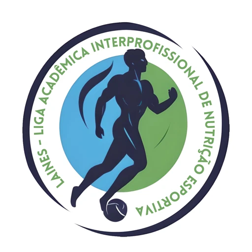

Entrar
Use seu CPF, só os números, ou seu e-mail de acesso.
É atleta e quer ser atendido pela liga? Entrar na lista de espera
Professor ou profissional de saúde sem conta?

FACISA, Universidade Federal do Rio Grande do Norte
Use seu CPF, só os números, ou seu e-mail de acesso.
É atleta e quer ser atendido pela liga? Entrar na lista de espera
Professor ou profissional de saúde sem conta?
Atleta: preenche o formulário público e entra na lista de espera.
Aluno: anamnese, avaliação clínica e socioeconômica.
Aluno: composição corporal, rotina alimentar, gasto energético, treino, psicologia e fisioterapia.
Aluno: monta o plano a partir da avaliação.
Profissional responsável: revisa e aprova o plano.
Atleta: recebe o plano aprovado no portal, com o PDF da mesma versão.
Hoje são 48 atletas ativos, 312 avaliações finalizadas e 37 membros ativos.